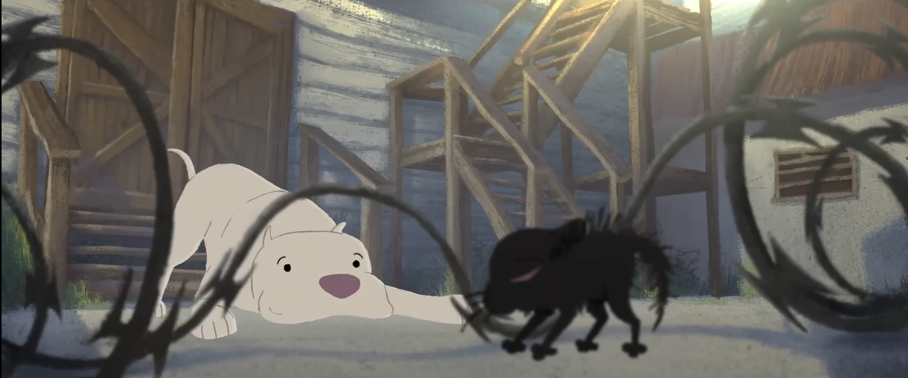
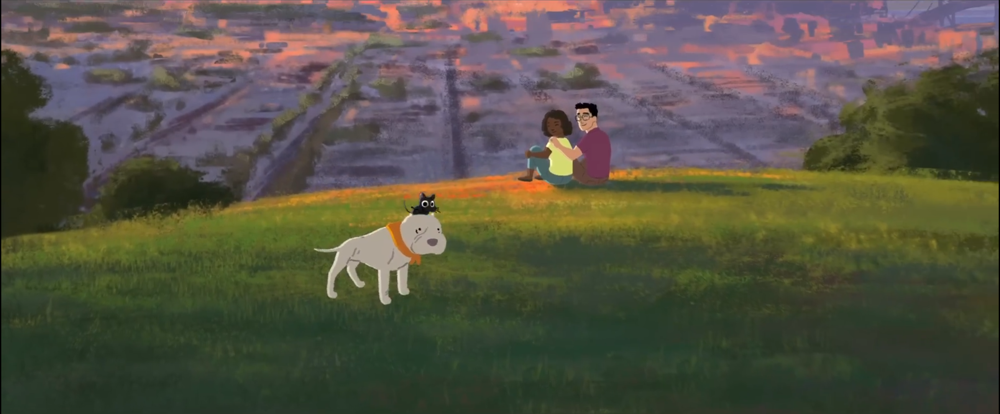

В феврале 2019 года студия Pixar, известная своими трёхмерными шедеврами, неожиданно выпустила короткометражный фильм, который выглядел так, будто его нарисовали вручную. «Kitbull» — трогательная история о бездомном котёнке и питбуле, которые находят друг в друге спасение. Мультфильм стал частью экспериментальной программы SparkShorts, в рамках которой сотрудники Pixar получают шесть месяцев и ограниченный бюджет на создание собственных проектов .
Режиссёром и сценаристом выступила Росана Салливан, а продюсером — Кэтрин Хендриксон. Ранее они работали над «Суперсемейкой 2» и «Университетом монстров» . Несмотря на то что фильм создавался с помощью компьютеров, визуально он полностью имитирует традиционную двумерную анимацию: каждый кадр проработан так, чтобы передать «очарование рукотворного изображения» .
О чём этот фильм
Сюжет разворачивается в Сан-Франциско, в районе Мишн. Маленький чёрный котёнок живёт на свалке за старым зданием и старается избегать любого контакта с людьми и другими животными. Однажды во двор привозят питбуля — собаку, которую хозяин держит на цепи и, судя по всему, использует в собачьих боях. Котёнок сначала боится пса, но постепенно между ними завязывается дружба. Когда питбуль особенно сильно страдает от жестокости хозяина, именно котёнок помогает ему решиться на побег .
«Я начала с эскизов маленького чёрного котёнка ещё в 2013 году. Однажды коллега показала мне видео, где кошка выгибает спину, пытаясь казаться грозной, а потом сразу падает со стола. Меня так позабавил этот контраст между самовосприятием и реальностью, что захотелось нарисовать котёнка, воплощающего эту суть» .
Интересно, что идея фильма возникла из любви Салливан к просмотру смешных видео с котами, которые помогали ей справляться со стрессом. Однако со временем простая зарисовка превратилась в глубокую историю о одиночестве, эмпатии и уязвимости. Режиссёр признавалась, что в детстве была очень застенчивой и ассоциировала себя с этим котёнком, который не выходит из зоны комфорта, чтобы не чувствовать себя уязвимым .
Почему это важно
«Kitbull» — редкий для Pixar случай обращения к полностью рисованной анимации. Хотя студия и раньше экспериментировала с 2D (например, в короткометражке «День и ночь» 2010 года), «Kitbull» стал первым проектом, полностью выполненным в этой технике . Салливан объясняла выбор стиля просто: «Я всегда любила очарование рисованного изображения. Двое художников не нарисуют одинаково, и два рисунка не будут в точности похожи» .
Кроме того, фильм поднимает серьёзную тему — жестокое обращение с животными и несправедливое отношение к питбулям. Салливан, работавшая волонтёром в приютах во время учёбы в колледже, знала этих собак как «милых и классных», но слышала об их негативной репутации. Ей хотелось рассказать историю через призму благополучия животных .
Кадры из мультфильма


Ключевые факты о «Kitbull»
- Режиссёр: Росана Салливан
- Продюсер: Кэтрин Хендриксон
- Студия: Pixar Animation Studios
- Программа: SparkShorts (третий фильм серии)
- Хронометраж: около 9 минут
- Номинация: «Оскар» за лучший анимационный короткометражный фильм (2020)
- Техника: Рисованная 2D-анимация (имитация традиционной, созданная на компьютере)
- Диалоги: Отсутствуют
Реакция критиков и зрителей
Короткометражка получила почти единодушно положительные отзывы. Критики называли её «очаровательной», «красивой», «трогательной» и «душераздирающей». Обозреватель Animation World Network Дэн Сарто написал, что фильм «доставляет всё, что можно пожелать: юмор, сердце и прекрасно проработанную анимацию» . Многие отмечали, что за девять минут фильм умудряется вызвать слёзы даже у самых стойких зрителей .
В 2020 году «Kitbull» был номинирован на премию «Оскар» в категории «Лучший анимационный короткометражный фильм», хотя статуэтка в итоге досталась «Hair Love» . Тем не менее, для проекта, созданного начинающими авторами в рамках экспериментальной программы, это стало огромным признанием.
Сегодня «Kitbull» можно найти на официальном YouTube-канале Pixar, а также на стриминговом сервисе Disney+. Это идеальный пример того, как ограниченные ресурсы и искренняя история оказываются сильнее больших бюджетов.